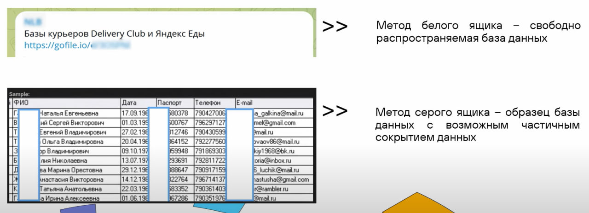
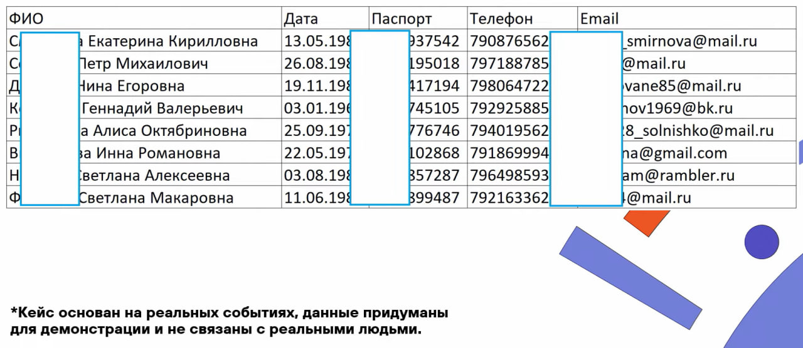
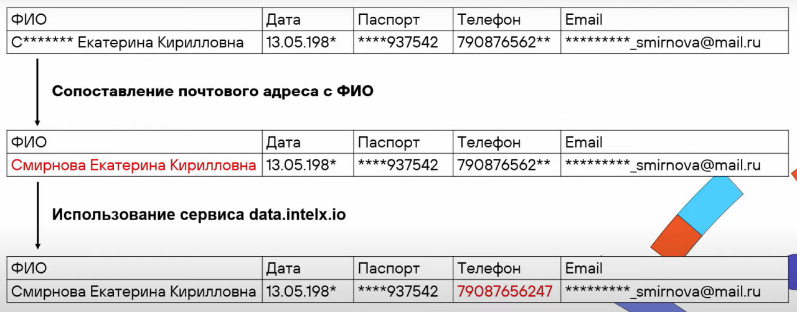
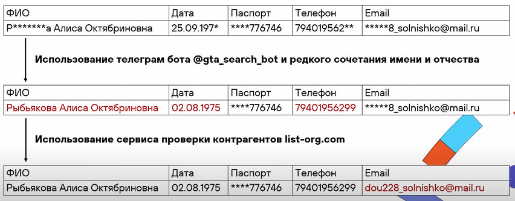
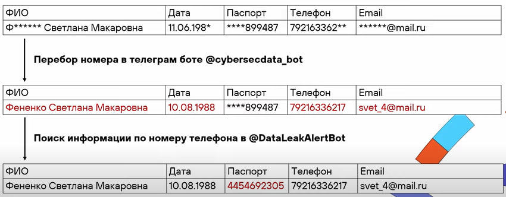
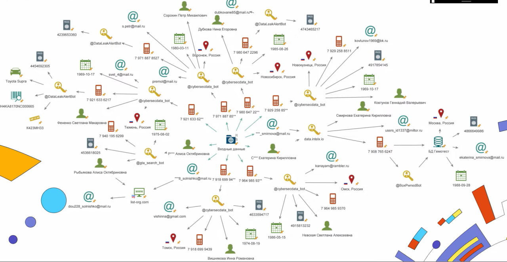

Фейковые утечки: слив НЕ засчитан?
113 Николай Чурсин - младший аналитик группы анализа гуроз ИБ, Positive Technologies
Место встречи
Изначально все началось с теневого ресурса RaidForums, в нем распростанялись базы данных, но в начале 2022 года его закрыли. На смену ему пришел форум BreachForums, либо просто Breach, но через год и его закрыли.
В настоящий момент нет какого-то определенного гигафорума, где находятся все базы данных, существуют всего несколько небольших. Также есть TLS сайты с представленными базами данных, которые получили в результате атак шифровальшиков.
Параллельно с этим набирает популярность мессенджер Telegramm как площадка для оказания теневых услуг, в том числе и для распространения баз данных.
Методы анализа

Базы данных могут продавать, либо раздавать бесплатно. В зависимости от этого и меняется методика анализа. Если, например, провести параллельность с пинтестом, то можно выделить метод белого и метод серого ящиков.
Кейс

Для демонстрации были сгенерированы данные, в качестве входных парамметров использованы ФИО, дата рождения, серия и номер паспорта, телефон и email адрес. Все поля частично закрыты, то есть мы не можем посмотреть что это за люди и что за данные представлены.
Задачи при верификации
Провести поиск сокрытых данных
Проверить на совпадение данных из кейса с данными из открытых источников
Проверить наличие представленных данных в других утечках
Сделаем все это в несколько этапов.
Этап 1: Анализ почты

На первом этапе проведем анализ почты. Как можно заметить, в одной из строк в качестве email адреса указана фамилия. В результате этого мы получаем полное ФИО человека.
Далее идем на сервис data.intelx.io, в качестве входных данных используем ФИО и получаем номер телефона, который будем использовать на третьем этапе.
Этап 2: Уникальные данные

Просматривая все записи из базы данных, можно заметить редкое сочетакие имени и отчества “Алиса Октябриновна”. Используем телеграм бот и получаем полное ФИО, дату рождения и номер телефона. Причем дата рождения из кейса не совпала с датой рождения, которую мы получили.
Далее используем уже полученное ФИО и частичный email адрес, который мы видим, для сервиса проверки контрагентов list-org.com и получаем полный email адрес.
Этап 3: Перебор данных

После этих двух этапов у нас не остается строк, где есть какие-то уникальные записи, за которые можно зацепиться, поэтому используем чувствительные поля.
Например, в данном случае можно использовать номер телефона. Не хватает всего несколько цифр, поэтому будем использовать обычный метод перебора. Для этого используем другой сервис, который позволяет нам это осуществить, и получаем такие данные, как ФИО, дата рождения, телефон и email адрес. Можно заметить, что в данном случае опять не совпадает дата рождения из кейса с полученной с помощью сервиса.
Получив полный номер телефона, используем другой сервис и получаем паспортые данные человека. Также видим, что данные из кейса не совпадают с полученными.
Результаты поиска

В результате таких манипуляций, мы получаем полные данные, которые были представленны в кейсе, которые позволяют нам сделать вывод о том, что данная база является компиляцией.
База данных является компиляцией потому что:
Дата рождения из кейса не совпадает с данными из других источников
Паспортные данные из кейса не совпадают с данными из других источников
В утечках отсутствуют уникальные данные
Какие вопросы остаются?
Можно ли верить сервисам и телеграм ботам?
- Относится к таким результатам, как к каким-то точным данным и верить им на сто процентов точно нельзя, потому что в них могут содержаться также компеляционные базы.
Всегда ли можно верифицировать утечки?
- Не всегда, так как существует множество разных тонкостей. Например, можем ли мы получить полностью все данные, либо это продаваемая база и мы видим только какую-то часть данных, сколько строк, какие поля и т.д.